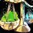
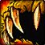
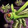
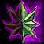
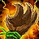
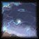
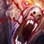
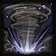

Druid
Patch Notes

Balance Changes
-
 Rage Generation has been updated to The Burning Crusade formula.
Rage Generation has been updated to The Burning Crusade formula. 
- Each auto-attack will provide a set amount of Rage, with off-hand weapons granting 50% of the Rage main-hand weapons do. Rage from damage taken will no longer be based on a standard creature of the character's level, but instead will be based on the health of the warrior or druid. This calculation ignores all damage reduction from armor, absorption, avoidance, block, or similar mechanics, so improving your gear will not reduce Rage gained.
-
 Bear and Dire Bear Forms have been consolidated into one Bear Form spell.
Bear and Dire Bear Forms have been consolidated into one Bear Form spell. 
- Beginning at level 40, Bear Form gains the additional power bonuses originally granted by Dire Bear Form.
Note - Even in researching old forum posts, many Druids felt that having two versions wasn't needed, especially when there wasn't a "Dire Cat" equivalent. This was a choice for simplicity and to minimize "Requires Bear or Dire Bear Form" complexity.
-
 Entangling Roots can now be used indoors.
Entangling Roots can now be used indoors.
-
 Tiger's Fury now increases all physical damage you deal by 10% instead of by a flat value and now has a 1 min cooldown.
Tiger's Fury now increases all physical damage you deal by 10% instead of by a flat value and now has a 1 min cooldown.

Note - Tiger's Fury got changed to deal percentage damage in Cata, but this version has a slightly longer cooldown, as the Cata version was a bit OP when layered with revamped talents.
-
 Frenzied Regeneration now converts each point of rage into 0.3% of max health.
Frenzied Regeneration now converts each point of rage into 0.3% of max health.

-

Swipe is now usable in Cat Form, becoming Swipe (Cat). 
-

Insect Swarm damage increased by 30% at all ranks.
-

Periodic heals (HoTs) cast by different players can now be active on the same target simultaneously.
-

Barkskin can now be cast while shapeshifted and can be cast on allies.
-

Tranquility base amount healed has increased by approximately 250% and the radius has increased to 30 yds.
New Spells and Abilities
-

Lacerate is now trainable at level 30:
-
Lacerates the target, making them bleed for physical damage over 15 sec plus an additional amount equal to 6% weapon damage per stack. Causes a high amount of threat. Stacks up to 5 times. Requires Bear Form.
-

Cyclone is now trainable at level 60:
-
Lifts an enemy target into the air, preventing all action and making them invulnerable for up to 6 sec. Only one target can be affected by your Cyclone at a time.
-
 Nature’s Grasp is now trainable at level 10:
Nature’s Grasp is now trainable at level 10:
-
While active, any time an enemy strikes the caster they have a 25% chance to become afflicted by Entangling Roots.
1 charge. Lasts 30 sec. 1 min cooldown.
 Hero's Journey
Hero's Journey
Upon reaching level 60, the Druid is able to befriend a unique critter companion that provides a permanent effect when summoned. This choice is permanent and cannot be undone:
- Dream-Touched Moth - Total Spirit increased by 2%.
- Ferocious Squirrel - Total Strength increased by 2%.
- Moon-Blessed Owl - Total Intellect increased by 2%.
Balance Changes Key labels the expansion Blizzard made that change. labels an idea Blizzard made during SoD.
labels a new idea I came up with.Thanks for exploring! - Mynta, GM of Aggrophobia, Fear bombing mobs since 2006, Andorhal PvP | NA (@mynlol on Discord)